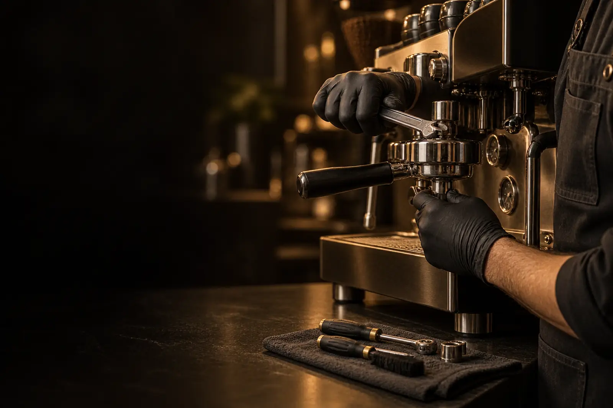

Mantenimiento preventivo
Limpieza integral de caldera, ajuste y calibración de presostatos, descalcificación ligera y regulación del flujo de erogación.
- Calibración
- Ajuste de presión
- Preventivo

Soporte técnico de alta precisión
Diagnóstico preciso y soporte rápido para mantener tu negocio de café en funcionamiento. Cuéntanos qué le pasa a tu máquina y coordinamos la revisión por WhatsApp.
Evaluación técnica de presión, temperatura y componentes de tu máquina.
Cambio de piezas y consumibles para distintas marcas de máquinas espresso.
Atención prioritaria para mantener tu barra de café operativa.
Consulta las condiciones de garantía de cada trabajo de reparación.
Atención personalizada en tu barra o taller
Selecciona el tipo de servicio, cuéntanos la falla y te escribiremos por WhatsApp para coordinar la revisión.
¿Tu máquina dejó de funcionar en plena jornada de trabajo? Escríbenos y revisamos tu caso con prioridad: las fallas críticas son las que más afectan la venta de tu establecimiento.
Especialidades a tu disposición
Limpieza integral de caldera, ajuste y calibración de presostatos, descalcificación ligera y regulación del flujo de erogación.
Tratamiento químico especializado para eliminar depósitos de sarro y minerales en caldera, intercambiadores y tuberías de cobre.
Reemplazo y reparación de electroválvulas de 3 vías, bombas volumétricas, elementos calefactores, presostatos y tarjetas electrónicas.
Sustitución rutinaria de empaques de grupo en silicona, duchas de precisión, juntas de lanceta de vapor y filtros internos.
Escríbenos y continuamos la conversación por WhatsApp.
Escribir por WhatsApp